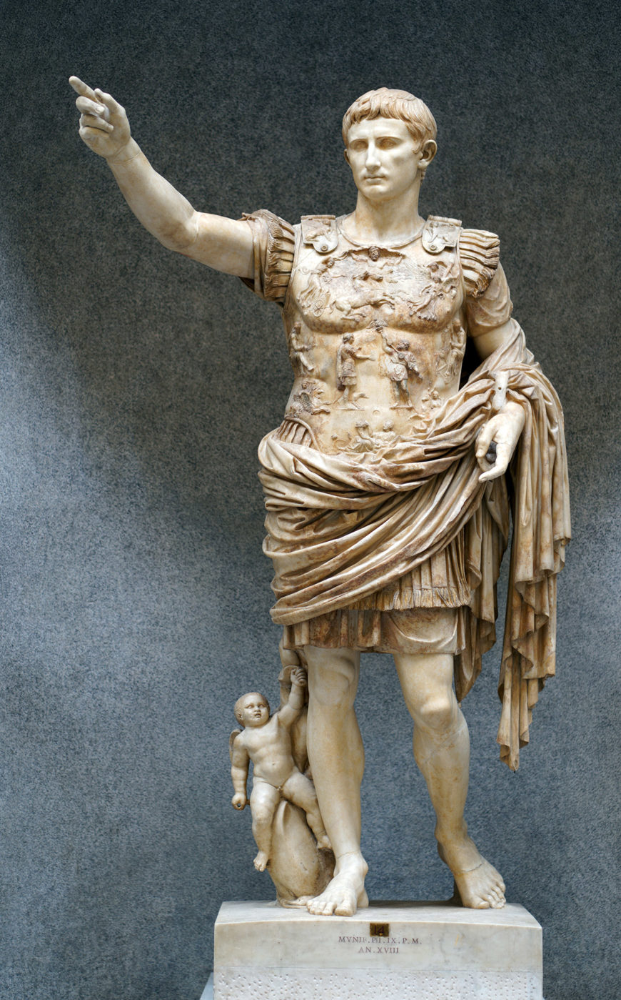

Thesis
Hook
Augustus Caesar managed to build 82 temples and called all his contributions to Rome and public service. In modern times, Donald Trump has built a following of 95 million on X and calls it transparency. Both of these leaders carefully crafted their images to sell to the public.
Introduction
Augustus Caesar is a remembered and renowned ruler who rose to power in 27 BCE. He used all means necessary to hold onto his authority, including stamping coins with his face, creating enormous architectural designs like the Ara Pacis, and writing his own autobiography, the Res Gestae. In the Res Gestae, Augustus depicted his rise to power as a selfless act of liberation. Augustus writes in the Res Gestae that he raised his army "on [his] own initiative and at [his] own expense" to liberate Rome from "the tyranny of a faction."1 Scholars have recognized the Res Gestae as fundamentally propagandistic — a document that "justifie[d] his rise to power" and served as "the final piece in his convoluted journey in establishing the Principate."2
Over two thousand years later, Donald Trump utilizes strikingly similar tactics and strategies, including X (formerly known as Twitter), Fox News, and TikTok, to evade the negatives of traditional media. With these platforms, Trump is able to directly speak with his supporters to paint his own narrative in a positive light while crafting his opponents and rivals in a negative light. He describes himself as a leader fighting against a corrupt group. Scholars note that Trump's strategy represented "a digital-first approach that marked a shift from traditional campaign media tactics,"3 and that his use of social media enabled him to reach voters "without relying on journalistic mediation."4
Thesis
Notwithstanding Augustus Caesar being completely backed by the Roman Empire for controlling his public image, while Donald Trump operates in a chaotic media environment with many opposing narratives, both political leaders highlight the importance of one's public image to gain and sustain, not just what they accomplish. These two leaders are separated by over two thousand years, yet both intricately craft their images with the tools at their disposal.

Footnotes
- Augustus Caesar, Res Gestae Divi Augusti, 14 CE, trans. Thomas Bushnell, MIT Internet Classics Archive, accessed 2026, https://classics.mit.edu/Augustus/deeds.html. ↩
- "Augustus — Master of Propaganda: Why Did Augustus Write the Res Gestae?" Academia.edu, accessed 2026, https://www.academia.edu/43341321/AUGUSTUS_MASTER_OF_PROPAGANDA_WHY_DID_AUGUSTUS_WRITE_ THE_RES_GESTAE_WHAT_SORT_OF_IMAGE_OF_HIS_LIFE_AND_REIGN_DOES_IT_PROJECT. ↩
- Partha P. Chatterjee, "Strategic Use of Social Media and Podcasts in Donald Trump's 2024 Presidential Campaign," ResearchGate, November 2024, https://www.researchgate.net/publication/386146096. ↩
- SAIS Review of International Affairs, "Social Media, Disinformation, and AI: Transforming the Landscape of the 2024 U.S. Presidential Political Campaigns," Johns Hopkins University, January 14, 2025, https://saisreview.sais.jhu.edu/social-media-disinformation-and-ai-transforming-the-landscape-of-the-2024-u-s-presidential-political-campaigns/. ↩
- Image: The Guardian, "Fox News and Trump's Second Term," November 18, 2024, https://www.theguardian.com/media/2024/nov/18/fox-news-trump-second-term. ↩
- Image: Smarthistory, "Augustus of Prima Porta," accessed 2026, https://smarthistory.org/augustus-of-primaporta/. ↩